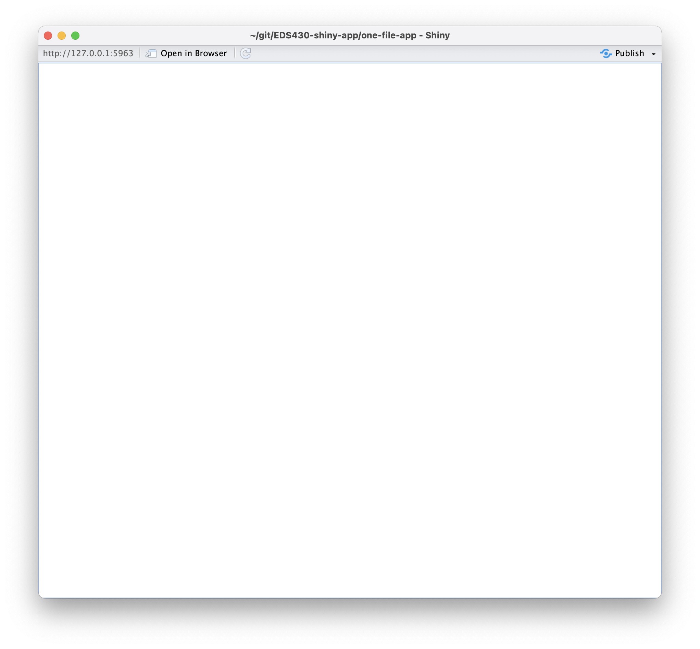
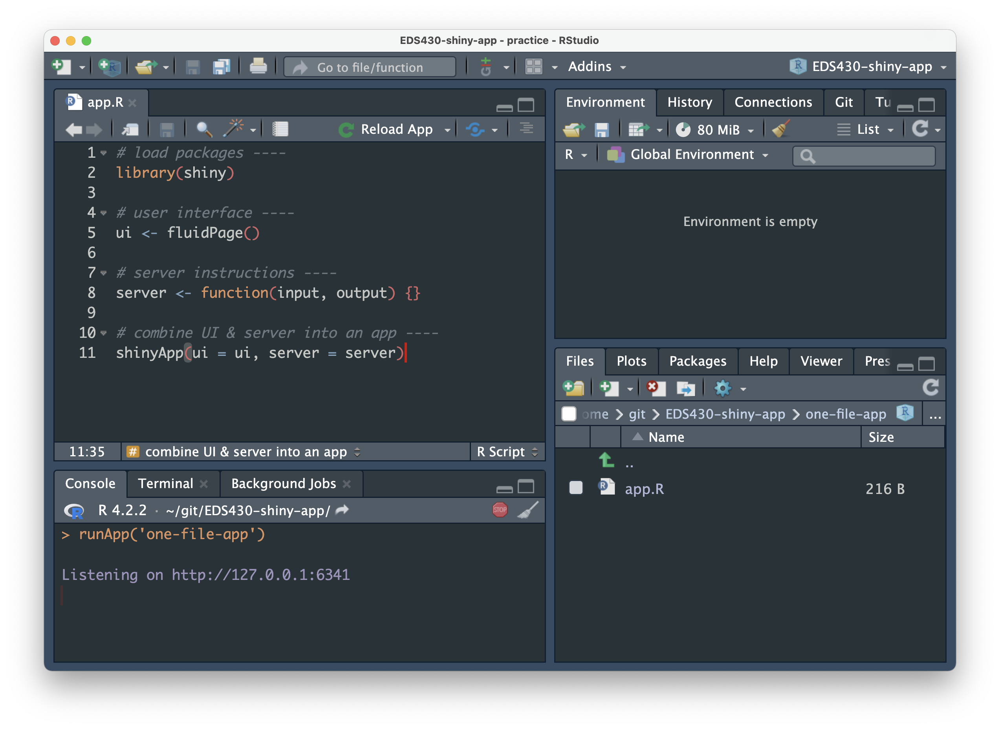

Let’s start with some standard operating procedures – things you’ll do each time you begin a new shiny app.
Create your GitHub repo
Let’s start by creating a GitHub repo to house our soon-to-be app(s), then we’ll clone our repo to our computer. I’m using RStudio to clone my repo in the example below, but you can also do this via the command line using git clone <repo-url>.
Shiny app repo structure
Not much is required to make a functional app (which is awesome) – for a basic app, you really just need an app.R file where you’ll write the code for your UI and server. To stay organized, we’ll place app.R into a subdirectory (e.g. myapp/), which will also house any dependencies (e.g. other scripts / files / etc.) used by app.R.
All Shiny apps begin (in almost) the same way
You have the option of creating either a single-file app or two-file app, and they look nearly the same (we’ll see both formats in the coming slides).
Why two options? Before v0.10.2, Shiny apps needed to be split into two separate files, ui.R and server.R, that defined the UI and server components, respectively. With v0.10.2+, users can create a single-file app, app.R, which contains both the UI and server components together. While it largely comes down to personal preference, a single-file format is best for smaller apps or when creating a reprex, while the two-file format is beneficial when writing large, complex apps where breaking apart code can make things a bit more navigable / maintainable.
Create a single-file Shiny app
You can create a single-file app using RStudio’s built-in Shiny app template (e.g. File > New Project… > New Directory > Shiny Application), but it’s just as easy to create it from scratch (and you’ll memorize the structure faster!). Let’s do that now.
(1) In your project repo, create a subdirectory to house your app – I’m calling mine, single-file-app.
(2) Create a new R script inside single-file-app/ and name it app.R – you must name your script app.R. Copy / type the following code into app.R, or use the shinyappsnippet to automatically generate a shiny app template.
~/single-file-app/app.R
# load packages ----library(shiny)# user interface ----ui <-fluidPage()# server instructions ----server <-function(input, output) {}# combine UI & server into an app ----shinyApp(ui = ui, server = server)
Run your app
When you save your app.R file, the “Run” code button should turn into a “Run App” button, like this: . Click that button to run your app (alternatively, run runApp("directory-name") in your console – for me, that looks like, runApp("single-file-app"))!
You won’t see much yet, as we’ve only built a blank app (but a functioning app, nonetheless!). In your console, you should see: Listening on http://127.0.0.1:XXXX, which is the URL where your app can be found. 127.0.0.1 is a standard address that means “this computer,” and the last four digits represent a randomly assigned port number. Click the “Open in Browser” button, , to see how your app will appear when viewed in your web browser.
Note the red stop sign, , in the top right corner of your console, indicating that R is busy – this is because your R session is currently acting as your Shiny app server and listening for any user interaction with your app. Because of this, you won’t be able to run any commands in the console until you quit your app. Do so by pressing the stop button.


Create a two-file Shiny app
In practice, you will likely find yourself opting for the the two-file format – code expands quickly, even when building relatively small apps. This two-file approach (three if you use a global.R file, which is encouraged) will help to keep your code a bit more manageable.
(1) In your project repo’s root directory, create a new subdirectory to house your app – I’m calling mine, two-file-app.
(2) Create two new R scripts inside two-file-app/ named ui.R and server.R – you must name your scripts ui.R and server.R. Copy the following code into the respective files. Note: When splitting your UI and server into separate files, you do not need to include the shinyApp(ui = ui, server = server) line of code (as required in your single-file app).
~/two-file-app/ui.R
# user interface ----ui <-fluidPage()
~/two-file-app/server.R
# server instructions ----server <-function(input, output) {}
(3) Lastly, let’s create a global.R file within two-file-app/ and add dependencies (right now, that’s just loading {shiny}). Run your app as we did earlier.
![A gif demonstrating how to set up a GitHub repo and how to clone that repo to your computer. Start by clicking on the 'Repositories' tab from your GitHub profile, then click the green 'New' button. Give your repo a name, check the box next to 'Add a README file', Add a .gitigore by choosing 'R' from the drop down menu, then click the green 'Create repository' button. From your repo landing page, click the green 'Code' button, then copy the URL to your clipboard. In RStudio, select 'New Project' from the top left 'Project' button, select 'Version Control', then 'Git', and paste your URL in the 'Repository URL field'. Your repo name should be auto completed in the 'Project directory name:' field, but if not, press the 'Tab' key. Click 'Create Project' to complete the process.](images/part1/create-repo.gif)